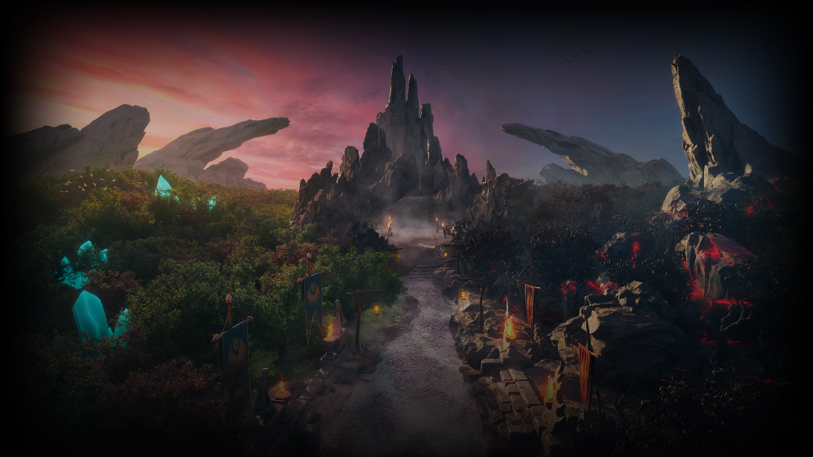
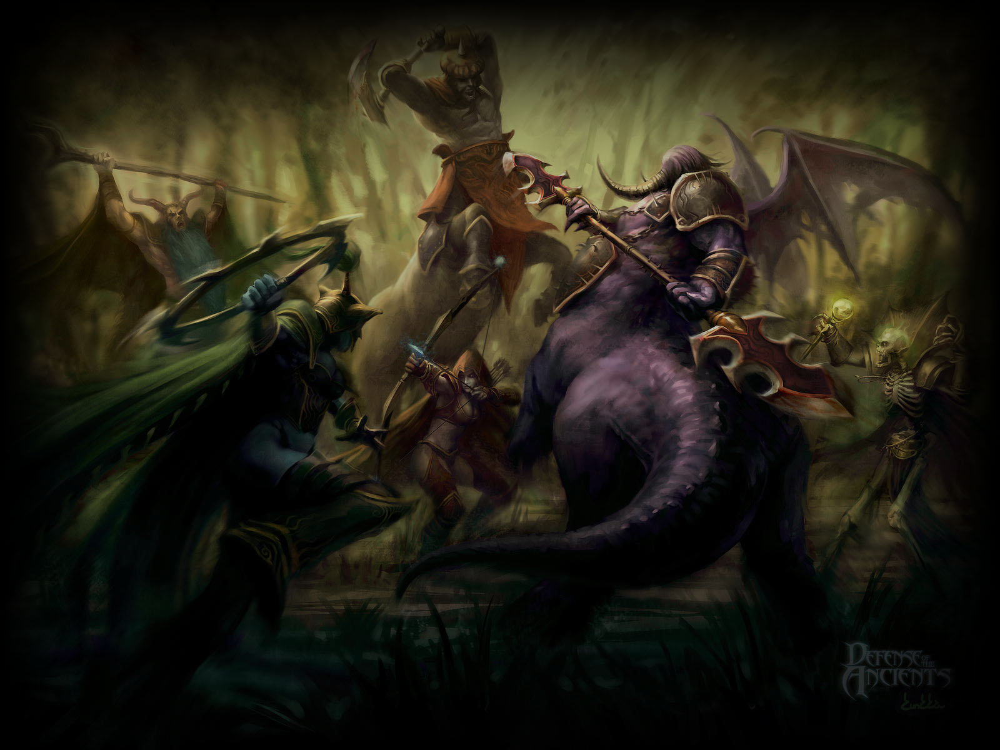
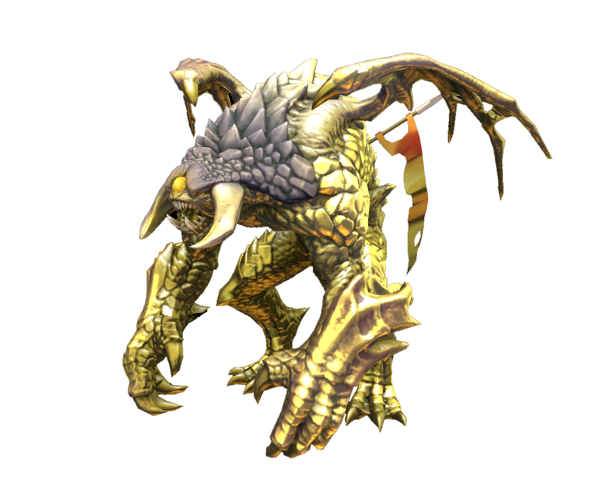
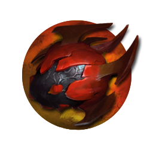
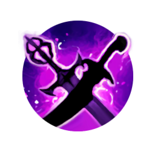
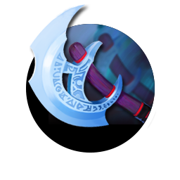
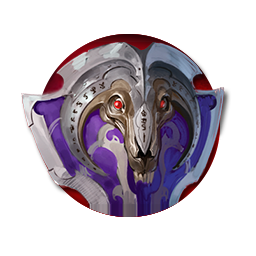
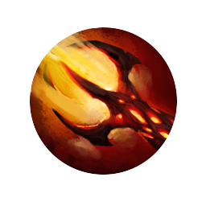

Welcome to dota 2
History
Dota 2, developed and published by Valve Corporation, is a multiplayer online battle arena (MOBA) game that serves as a sequel to the original Dota mod from Warcraft III. Following its announcement in 2010, Dota 2 underwent closed beta testing before its official release as a free-to-play title on Steam in 2013.One of Dota 2's defining features is its annual tournament, The International, first held in 2011. The International has become synonymous with esports extravagance, boasting record-breaking prize pools crowdfunded through the sale of in-game items. This event has propelled Dota 2 to the forefront of competitive gaming, attracting top teams and players from across the globe.Valve's commitment to Dota 2 extends beyond The International, with regular updates and content additions keeping the game dynamic and engaging. New heroes, balance adjustments, and gameplay features are introduced to cater to the evolving needs of the community.Despite its roots in the Warcraft III modding scene, Dota 2 has transcended its origins to become a cultural phenomenon, shaping the landscape of competitive gaming and leaving a lasting impact on the gaming industry as a whole.
Heroes in dota 1 Vs dota 2
dota 1 heroes
dota 2 heroes
How to play
objective
Objective: The main objective of Dota 2 is to destroy the enemy team's Ancient, a structure located within their base. Players work together to push down lanes, defeat enemy heroes, and destroy towers to gain an advantage and ultimately destroy the Ancient.
items
Throughout the game, players accumulate gold by killing creeps, jungle creeps, and enemy heroes. This gold is used to purchase items or upgrade existing ones. Items enhance a hero's power and can have various effects, ranging from boosting damage and survivability to providing unique abilities.
roshan
Roshan is a formidable neutral creature located in the pit near the center of the map. Teams often work together to defeat Roshan, as he drops the Aegis of the Immortal upon death. The Aegis grants its holder a second life, allowing them to respawn immediately with full health and mana after being killed in combat.
roles
Hard carry
The hard carry is a hero who requires a significant amount of farm and experience to become powerful in the late game. They excel at dealing high amounts of damage and carrying the team to victory in the later stages of the game. Hard carries are often positioned in the safe lane (bottom for Radiant, top for Dire) where they can farm safely and receive support from a lane partner.
Mid lane
The mid lane hero is responsible for controlling the middle lane and gaining early levels and gold. Mid laners often possess strong abilities and benefit from experience and gold to dominate the game's mid-game phase. They are expected to gank other lanes, secure power runes, and exert map control. Mid lane heroes tend to be versatile and capable of impacting the game's tempo.
Offlane
The offlane hero, also known as the "offlaner" or "solo laner," is tasked with holding their own in a challenging lane against the enemy carry and support. Offlaners are typically durable heroes who can survive harassment and gain experience even when outnumbered. Their role is to disrupt the enemy's farm, soak up experience, and create space for their team through aggressive plays and strategic positioning.
Soft support
Soft supports, also known as "position 4 supports," have more flexibility in terms of itemization and playstyle. They may roam the map, initiate fights, and secure key objectives like runes and early kills. Soft supports can transition into core roles later in the game if they acquire sufficient resources.
Hard support
The hard support focuses on securing vision, protecting their team's core heroes, and making sacrifices to ensure their team's success. They often have limited resources and prioritize buying support items like wards, smoke of deceit, and detection.